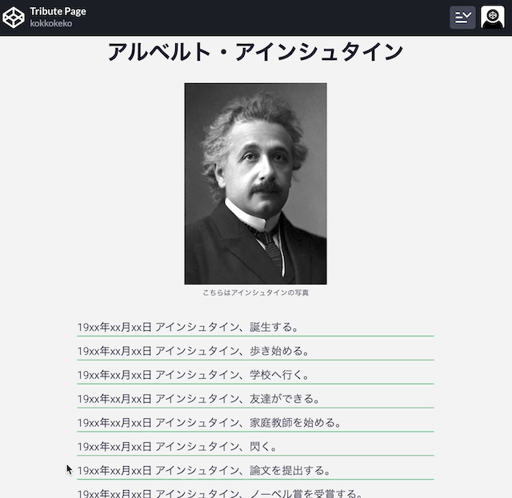
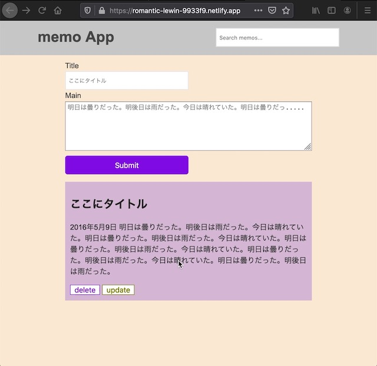
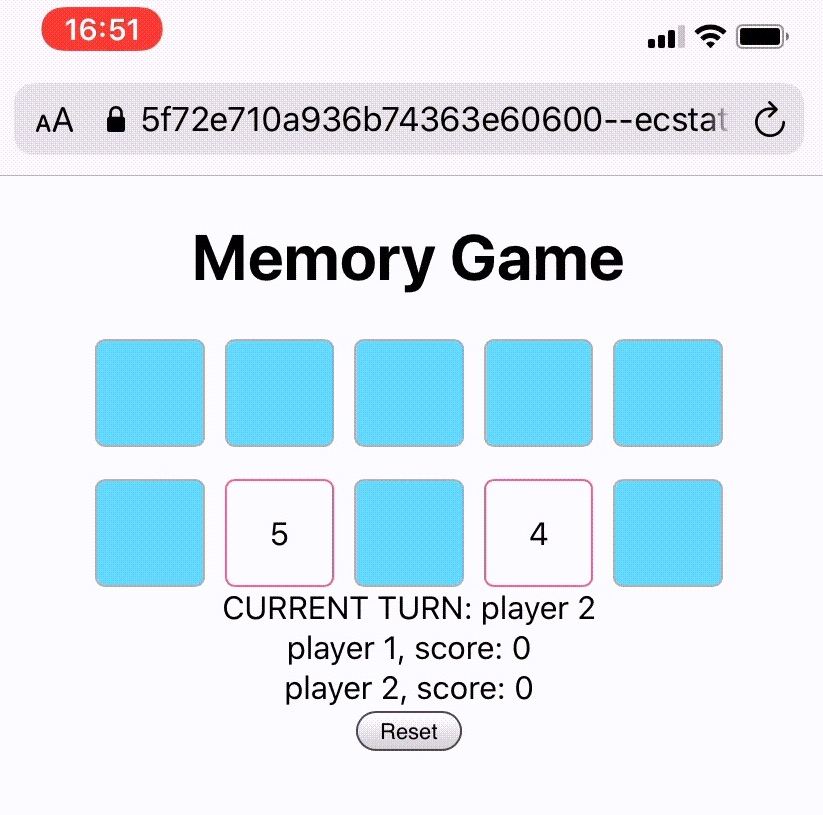
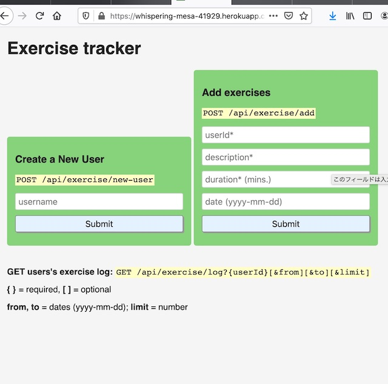

<!DOCTYPE html>
<html lang="en">

<head>
  <meta charset="UTF-8">
  <meta name="viewport" content="width=device-width, initial-scale=1.0">
  <meta http-equiv="X-UA-Compatible" content="ie=edge">
  <meta name="description" content="This is a kokko's portfolio page.">
  <meta name="author" content="Kokko">
  <title>kokkoのポートフォリオ</title>
  <!-- <link rel="stylesheet" href="https://cdn.rawgit.com/filipelinhares/ress/master/dist/ress.min.css"> -->
  <!-- <link href="https://fonts.googleapis.com/css2?family=Roboto:ital,wght@0,100;0,300;0,500;1,100;1,300;1,500&display=swap"  -->
  <link rel="stylesheet" href="reset.css">
  <link rel="stylesheet" href="index.css">
</head>

<body>
  <header id="header">
    <nav>
      <ul>
        <li class="contents"><a href="#home">Kokko's Portfolio</a></li>
        <li class="contents"><a href="#about">About</a></li>
        <li class="contents"><a href="#work">Work</a></li>
        <li class="contents"><a href="#contact">Contact</a></li>
      </ul>
    </nav>
  </header>

  <section id="work" class="container">
    <h2>プロジェクト一覧</h2>
    <h3>フロントエンド</h3>
    <div class="projects">
      <div>
        
        <div class="project-detail">
          <h3>トリビュートページ</h3>
          <p>HTML,CSSのプロジェクト。ウェブページを作成する際の初期設定を学ぶ。</p>
          <a href="https://codepen.io/kokkokeko/full/jOWvpad">アプリを触ってみる。</a>
          <a href="images/Einstein.gif">gifでみる。</a>
          <a href="https://codepen.io/kokkokeko/pen/jOWvpad">コードをみる。</a>
          <p>キーワード：セマンティクス、google font、ress.css</p>
        </div>
      </div>

      <div>
        
        <div class="project-detail">
          <h3>メモアプリ</h3>
          <p>DOM操作の練習として作成。CRUD機能、フィルタリング機能。</p>
          <a href="https://romantic-lewin-9933f9.netlify.app/">アプリを触ってみる。</a>
          <a href="images/output.gif">gifでみる。</a>
          <a href="https://github.com/kokkokeko/memoApp">コードをみる。</a>
          <p>キーワード：javascript, DOM</p>
        </div>
      </div>
      <div>
        
        <div class="project-detail">
          <h3>神経衰弱ゲーム</h3>
          <p>Reactフレーム枠の練習。ゲームロジック作成。</p>
          <a href="https://gracious-goldstine-25e31b.netlify.app/">アプリを触ってみる。</a>
          <a href="images/memory-game.gif">gifでみる。</a>
          <a href="https://github.com/kokkokeko/memory-game/blob/master/src/App.js">コードをみる。</a>
          <p>キーワード：React, netlify</p>
        </div>
      </div>
    </div>
    <h3>バックエンド</h3>

    <div class="projects">
      <div>
        <div class="project-detail">
          <h3>タイムスタンプ</h3>
          <ol>
            <li>エンドポイント：[projecturl]/api/timestamp/:date_string</li>
            <li>date_stringで指定した日のunix時間、UTCをJSONで応答します</li>
            <li>適切：JSONでタイムスタンプを送信</li>
            <li>不適切：JSONでエラーを送信</li>
            <li>例：$ curl https://nimble-nephew.glitch.me/api/timestamp/2015-11-22</li>
          </ol>
          <a href="https://nimble-nephew.glitch.me/">アプリを触ってみる。</a>
          <a href="https://glitch.com/edit/#!/nimble-nephew">コードをみる。</a>
          <p>キーワード：Date、正規表現、JSON、UTC</p>
        </div>
      </div>

      <div>
        <div class="project-detail">
          <h3>リクエストヘッダー解析</h3>
          <ol>
            <li>エンドポイント： [base url]/api/whoami </li>
            <li>クライアントのHTTPヘッダーを確認します</li>
            <li>ipアドレス、ブラウザの言語、ブラウザとOS情報を取得する</li>
            <li>例：$ curl https://cuboid-centaur.glitch.me/api/whoami</li>
          </ol>
          <a href="https://cuboid-centaur.glitch.me/">アプリを触ってみる。</a>
          <a href="https://glitch.com/edit/#!/cuboid-centaur">コードをみる。</a>
          <p>キーワード：HTTPヘッダー、IPアドレス</p>
        </div>
      </div>

      <div>
        <div class="project-detail">
          <h3>アップロードされたファイルの解析</h3>
          <ol>
            <li>フォームからメディアファイルをアップロードすると情報を返します</li>
            <li>ファイル名、MIMEタイプ、ファイルサイズ</li>
          </ol>
          <a href="https://zany-canidae.glitch.me/">アプリを触ってみる。</a>
          <a href="https://glitch.com/edit/#!/zany-canidae">コードをみる。</a>
          <p>キーワード：multer 、ファイルシステム</p>
        </div>
      </div>
      <div>
        <div class="project-detail">
          <h3>URL変換&保存マイクロサービス</h3>
          <ol>
            <li>フォームから好きなサイトのURLを送信するとハッシュ値に変換する</li>
            <li>ハッシュ値を使ってAPIを叩くと元のURLに移動する</li>
            <li>例：www.twitter.comまたはhttps://twitter.comを送信</li>
            <li>[app_url]/api/shorturl/[ハッシュ値]</li>
          </ol>
          <a href="https://economic-goldenrod.glitch.me">アプリを触ってみる。</a>
          <a href="https://glitch.com/edit/#!/economic-goldenrod">コードをみる。</a>
          <p>キーワード：dns、bcrypt、正規表現、ハッシュ関数、Promise、async/await、リダイレクト</p>
        </div>
      </div>

      <div>
        
        <div class="project-detail">
          <h3>エクササイズトラッカー</h3>
          <ol>
            <li>フォームからユーザー登録をするとユーザID(ハッシュ値）が返される</li>
            <li>GET [projecturl]/api/exercise/usersでユーザ一覧取得</li>
            <li>フォームからユーザID、エクササイズ名、時間、日にちを登録する</li>
            <li>GET [projecturl] /api/exercise/log?userId=[ユーザID][, &from=いつから][, &to=いつまで][,
              &limit=表示数]で登録したエクササイズを確認できる（from, to, limitは任意）</li>
          </ol>
          <a href="https://whispering-mesa-41929.herokuapp.com/">アプリを触ってみる。</a>
          <a href="https://github.com/kokkokeko/Exercise-Tracker/blob/errhandle/server.js">コードをみる。</a>
          <p>キーワード：heroku、mongoDB Atlas、mongooseスキーマ、環境変数、バリデーションチェック、Promiseチェーン、エラーハンドリング</p>
        </div>
        <div>
          <div class="project-detail">
            <h3>帝国単位変換</h3>
            <ol>
              <li>帝国単位gal,l,lbsとkg,mi,kmを変換するサービス</li>
              <li>例：curl [projecturl]/api/convert?input=4gal</li>
              <li>1/2km（分数）, 5.4/3lbs（小数）, kg(数値なしだと1となる）も可</li>
              <li>Mocha, chaiで関数、APIテストを記述</li>
            </ol>
            <a href="https://low-daffodil.glitch.me">アプリを触ってみる。</a>
            <a href="https://glitch.com/edit/#!/low-daffodil">コードをみる。</a>
            <p>キーワード：テスト、文字列処理</p>
          </div>
        </div>
        <div>
          <div class="project-detail">
            <h3>本登録</h3>
            <ol>
              <li>本の登録、コメント、デリートができる</li>
              <li>helmetJSでnoCashe、hidePoweredByを使う</li>
              <li>例：curl [projecturl]/api/books/</li>
              <li>curl -X POST -d "title=potter" [projecturl]/api/books/</li>
              <li>curl -X DELETE -d "title=potter" [projecturl]/api/books/</li>
              <li>curl [projecturl]/api/books/:id</li>
              <li>curl -X POST -d "comment=cool" [projecturl]/api/books/:id</li>
              <li>curl -X DELETE [projecturl]/api/books/:id</li>
            </ol>
            <a href="https://low-daffodil.glitch.me">アプリを触ってみる。</a>
            <a href="https://glitch.com/edit/#!/low-daffodil">コードをみる。</a>
            <p>キーワード：関数テスト、nested document、aggregate、モジュール、セキュリティ</p>
          </div>
        </div>
      </div>
  </section>
  <section id="about" class="container">
    <h2>私について</h2>

    <section id="self-introduction">
      <h3>自己紹介</h3>
      <p> 現在ITエンジニアとして求職中。2019年3月会津大学コンピュータ理工学部卒業。2019年5月から3ヶ月間、派遣社員として奥日光小西ホテルにてフロント業務に従事。その後freecodecamp、MDN Web
        Devなどを利用してweb技術を独学。卒業論文では強化学習を用いて7x7格子の簡単なパックマンゲームを学習するプログラムを作成。</p>
      <br>
    </section>
    <section class="skills">

      <table>
        <thead>
          <h3>技術、スキルセット</h3>
        </thead>
        <h4>概要</h4>
        <ul>
          <li>node.js, express, MongoDB, MySQLを使用したバックエンドAPI開発</li>
          <li>html, css, javascript, reacts, vuejsを用いたフロントエンド開発</li>
          <li>HTTP通信</li>
          <li>python, tensorflowフレームワークを使用した畳み込みニューラルネットワーク構築</li>
        </ul>
        <h4>具体例</h4>
        <tbody>
          <tr col="row">
            <th>HTML, CSS</th>
            <td>レスポンシブウェブサイトを制作できる。MDN Web Docsを利用できる。BEM（予定）, SASS（予定）</td>
          </tr>
          <tr col="row">
            <th>Javscript</th>
            <td>Todoアプリが作れる。ECMAScript, DOM API, Fetch API, Promise, JSON, オブジェクト指向プログラミング（予定）</td>
          </tr>
          <tr col="row">
            <th>React</th>
            <td>Main Conceptの技術を使ったアプリ開発</td>
          </tr>
          <tr col="row">
            <th>Vue</th>
            <td>基本コンセプトとvuex, vue-routerがわかる。</td>
          </tr>
          <tr col="row">
            <th>Node.js, Express</th>
            <td>APIを実装できる。単体テストができる。RESTful API, Mocha, Chai, phantomJS, HelmetJS, passport, localAuth, githubAuth,
              Socket.io</td>
          </tr>
          <tr col="row">
            <th>MongoDB, Mongoose</th>
            <td>CRUD機能を実装できる。ドキュメントが読める。</td>
          </tr>
          <tr col="row">
            <th>MySQL</th>
            <td>基本的な問い合わせができる。ドキュメントが読める。</td>
          </tr>
          <tr col="row">
          <tr col="row">
            <th>Git, Github</th>
            <td> 基本的な開発フローがわかる。</td>
          </tr>
          <tr col="row">
            <th>プログラミング</th>
            <td>PaizaのA問題を解くことができる。基本的なアルゴリズムとデータ構造を理解できる。</td>
          </tr>
          <tr col="row">
            <th>Python, Tensorflow</th>
            <td>畳み込みニューラルネットワーク実装、ログ取得、グラフ作成。</td>
          </tr>
          <tr col="row">
            <th>C, Java</th>
            <td>大学の講義で使用</td>
          </tr>

        </tbody>
      </table>

    </section>
    <section id="basic-information">

      <table>
        <thead>
          <h3>基本情報</h3>
        </thead>
        <tbody>
          <tr col="row">
            <th>性別</th>
            <td>男性 / 独身</td>
          </tr>
          <tr col="row">
            <th>生年月日</th>
            <td>1996年4月9日（火</td>
          </tr>
          <tr col="row">
            <th>現在の状況</th>
            <td>無職</td>
          </tr>
          <tr col="row">
            <th>学歴</th>
            <td>会津大学コンピュータ理工学部2019年卒</td>
          </tr>
          <tr col="row">
            <th>アルバイト経験</th>
            <td>塾講師、ホテル業</td>
          </tr>
          <tr col="row">
            <th>住所</th>
            <td>千葉県船橋市（現在は浅草に滞在中</td>
          </tr>
          <tr col="row">
            <th>出身地</th>
            <td>沖縄県宮古島市</td>
          </tr>

        </tbody>

      </table>
      <section id="self-produce">
        <h3>自己PR</h3>
        <h4>自分で調べ課題を解決する力</h4>
        <p>
          プログラミングでのエラーや新しい技術を学ぶ際に自分で調べ課題を解決できる力があります。ウェブ技術は広範なため自分で調べる力が必要です。独学をしていく中で、公式ドキュメントやStackoverflowなどを使用して課題解決をする習慣を付けました。
        </p>
        <h4>すぐに働ける状態で、早く現場で経験を積みたい思いがある</h4>
        <p>
          IT業界では日々技術が更新されていることや個人開発では得られない、実際に現場で働くことで得られる知識があると聞いています。すぐにでも仕事に就き、現場での開発経験を少しでも多く積みたいと考えています。現在定職やアルバイト等をしていないので採用を受け次第、すぐに働けます。
        </p>

      </section>

    </section>

    <section id="contact" class="container">
      <h2>一緒に働きましょう！</h2>
      <p>お茶でも飲みませんか？</p>
      <div class="contact-links">
        <a href="www.linkedin.com/in/kojiro-kugai-1011b21a4">Linked In</a>
      <a href=" https://github.com/kokkokeko">GitHub</a>
      <a href=" https://twitter.com/kokko55kugai">Twitter</a>
      <a href=" https://www.wantedly.com/users/99935756">Wantedly</a>
    </div>
    
  </section>
  <footer id=" footer">
          <small>Copyright &copy; 2020 Kojiro kugai, jobless man</small>
          </footer>
</body>

</html>